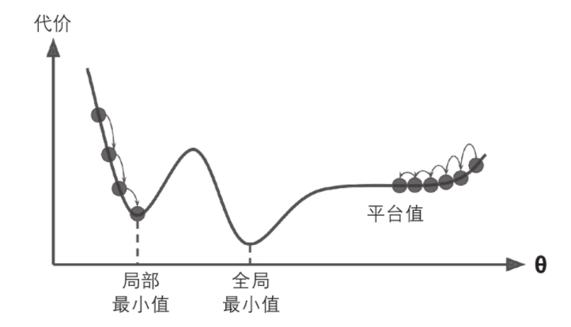

4.2 梯度下降¶
使用梯度下降时，需要保证所有特征值的大小比例都差不多（比如使用Scikit-Learn的``StandardScaler``类），否则收敛的时间会长很多。
4.2.1 批量梯度下降¶
在计算梯度下降的每一步时，都是基于完整的训练集X的。这就是为什么该算法会被称为批量梯度下降：每一步都使用整批训练数据（实际上，全梯度下降可能是个更好的名字）。因此，面对非常庞大的训练集时，算法会变得极慢（不过我们即将看到快得多的梯度下降算法）。但是，梯度下降算法随特征数量扩展的表现比较好。如果要训练的线性模型拥有几十万个特征，使用梯度下降比标准方程或者SVD要快得多。
成本函数的梯度向量
[1]:
import numpy as np
X = 2 * np.random.rand(100, 1)
y = 4 + 3 * X + np.random.rand(100, 1)
X[:3], y[:3]
[1]:
(array([[1.05880697],
[0.13833397],
[1.11839701]]),
array([[7.46563004],
[4.79332331],
[7.61861999]]))
[3]:
X_b = np.c_[np.ones((100, 1)), X]
X_b[:3]
[3]:
array([[1. , 1.05880697],
[1. , 0.13833397],
[1. , 1.11839701]])
[4]:
eta = 0.1 #learning rate
n_iterations = 1000
m = 100
theta = np.random.randn(2, 1)
for iteration in range(n_iterations):
gradients = 2/m * X_b.T.dot(X_b.dot(theta) - y)
theta = theta - eta * gradients
theta
[4]:
array([[4.45409996],
[3.03039606]])
4.2.2 随机梯度下降¶
批量梯度下降的主要问题是它要用整个训练集来计算每一步的梯度，所以训练集很大是，算法会特别的慢。与之相反的极端是随机梯度下降，每一步在训练集中随机选择一个实例，并且仅基于该单个实例来计算梯度，可以被用来训练海量的数据集（SGD可以作为核外算法实现）。由于算法的性质，它比批量梯度下降要不规则的多

如上图所示，当loss函数非常不规则时，随机梯度下降其实可是帮助算法跳出局部最小值，所以相比批量梯度下降，它对找到全局最小值更有优势。
随机性的好处在于可以逃离局部最优解，但缺点是永远定位不出最小值。要解决这个问题，有一个方法是逐步降低学习率，开始的步长比较长（这有助于快速进展和逃离局部最小值），然后越来越小，让算法尽量靠近全局最小值，这个过程叫做模拟退火。
[6]:
n_epochs = 50
t0, t1 = 5, 50 # learning schedule hyperparameters
def learning_schedule(t):
return t0 /(t + t1)
theta = np.random.randn(2, 1)
for epoch in range(n_epochs):
for i in range(m):
random_index = np.random.randint(m)
xi = X_b[random_index: random_index+1]
yi = y[random_index: random_index+1]
gradients = 2 * xi.T.dot(xi.dot(theta) - yi)
eta = learning_schedule(epoch * m + 1)
theta = theta - eta * gradients
theta
[6]:
array([[4.45623151],
[3.017257 ]])
使用梯度下降时，训练实例必须独立且均匀分布，以确保平均而言将参数拉向全局最优解。确保这一点的一种简单方法是在训练过程中的对实例进行随机混洗。
[7]:
from sklearn.linear_model import SGDRegressor
sgd_reg = SGDRegressor(max_iter=1000, tol=1e-3, penalty=None, eta0=0.1)
sgd_reg.fit(X, y.ravel())
[7]:
SGDRegressor(eta0=0.1, penalty=None)
[8]:
sgd_reg.intercept_, sgd_reg.coef_
[8]:
(array([4.41464156]), array([3.02093769]))
4.2.3 小批量梯度下降¶
小批量梯度下降在称为小型批量的随机实例集上计算梯度。小批量梯度下降优于随机梯度下降的主要优点是，你可以通过矩阵操作的硬件优化来提高性能，特别是在使用GPU时。
与随机梯度下降相比，该算法在参数空间上的进展更稳定，尤其是在相当大的小批次中。结果，小批量梯度下降最终将比随机梯度下降走得更接近最小值，但它可能很难摆脱局部最小值。
4.2.4 线性回归算法的比较¶
算法 |
m很大 |
核外支持 |
n很大 |
超参数 |
要求缩放 |
Scikit-Learn |
|---|---|---|---|---|---|---|
标准方程 |
快 |
否 |
慢 |
0 |
否 |
N/A |
SVD |
快 |
否 |
慢 |
0 |
否 |
LinearRegression |
批量GD |
慢 |
否 |
快 |
2 |
是 |
SGDRegressor |
随机GD |
快 |
是 |
快 |
>= 2 |
是 |
SGDRegressor |
小批量GD |
快 |
是 |
快 |
>= 2 |
是 |
SGDRegressor |
训练后几乎没有区别：所有这些算法最终都具有非常相似的模型，并且以完全相同的方式进行预测。